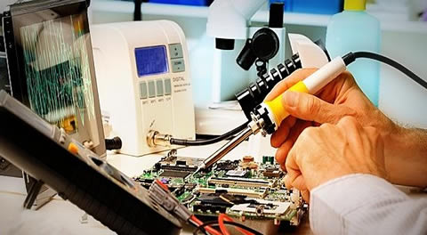

ELECTRONICA AUDIO Y VIDEO
Reparación de productos electrónicos para su funcionamiento y productividad. comprometidos con el desarrollo sostenible y comodidad de nuestros clientes.
Reparación de productos electrónicos para su funcionamiento y productividad. comprometidos con el desarrollo sostenible y comodidad de nuestros clientes.
Brindar servicios especializados de reparación y mantenimiento de equipos de sonido profesional, instrumentos electrónicos y sistemas de iluminación. Ofrecer soluciones de calidad, confianza y eficiencia para satisfacer las necesidades de nuestros clientes.
Ser una empresa reconocida por ofrecer servicios de reparación y mantenimiento de alta calidad, fortaleciendo el desarrollo del sector tecnológico y promoviendo una atención eficiente.

Reparación y mantenimiento de cabinas, amplificadores, consolas y equipos de audio profesional.
Reparación y mantenimiento de instrumentos electrónicos como guitarras, teclados, baterías y otros equipos musicales.
Mantenimiento y reparación de luces LED, luces robóticas y sistemas de iluminación para eventos.
📞 Teléfono: 300 3982838
📧 Correo: electronicaudioyvideos@gmail.com